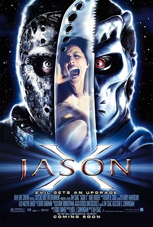

| Jason X | |
|---|---|
|  | |
| Film | Jason X |
| source cerita: | wikipedia |
| Tanggal rilis | 15 November 2001 |
| Bahasa | Bahasa Inggris |
| Durasi | 92 menit |
Pada tahun 2008, pembunuh massal Jason Voorhees ditangkap oleh pemerintah Amerika Serikat dan ditahan di Fasilitas Penelitian Crystal Lake. Pada tahun 2010, setelah beberapa kali gagal membunuh Jason selama periode dua tahun, ilmuwan pemerintah Rowan LaFontaine , kepala fasilitas tersebut, menyarankan untuk menempatkannya dalam stasis kriogenik . Dr. Wimmer dan Sersan Marcus tiba dengan tentara, berharap untuk meneliti lebih lanjut kemampuan Jason untuk menyembuhkan luka yang mematikan, karena mereka percaya itu melibatkan regenerasi sel cepat yang dapat direplikasi. Jason melepaskan diri dari pengekangannya dan membunuh para prajurit dan Dr. Rowan membujuknya ke dalam pod kriogenik dan mengaktifkannya, tetapi dia memecahkan pod itu dengan parangnya , menusuk perutnya. Cairan kriogenik tumpah ke dalam ruangan tertutup, membekukan mereka berdua.
Pada tahun 2455, sekitar 445 tahun kemudian, Bumi menjadi terlalu tercemar untuk mendukung kehidupan dan manusia telah pindah ke planet baru, Bumi II. Dalam perjalanan wisata ke Bumi I, Profesor Brandon Lowe, teman androidnya KM-14, pekerja magang Adrienne Thomas, dan para siswa Tsunaron, Janessa, Azrael, Kinsa, Waylander, dan Stoney menjelajahi Fasilitas Penelitian Crystal Lake yang terbengkalai, menemukan Jason dan Rowan yang membeku. Mereka membawa mereka ke pesawat ruang angkasa mereka, Grendel , dan menghidupkan kembali Rowan sambil meninggalkan Jason di kamar mayat, percaya bahwa dia sudah mati.
Adrienne diperintahkan untuk membedah tubuh Jason tetapi Rowan memperingatkan mereka tentang bahaya, mengungkap sifat dan kemampuan super Jason. Lowe, yang terlilit hutang serius, menelepon pendukung finansialnya Dieter Perez di stasiun luar angkasa terdekat Solaris . Perez mengenali nama Jason dan mencatat tubuhnya dapat menarik minat seorang kolektor. Sementara Stoney dan Kinsa berhubungan seks, Jason terbangun dan menyerang Adrienne, membekukan wajahnya dengan nitrogen cair sebelum menghancurkan kepalanya berkeping-keping di meja. Jason mengambil alat bedah berbentuk parang dan membunuh Stoney di depan Kinsa. Sersan Brodski memimpin sekelompok tentara untuk menyerang Jason. Jason menyela permainan holografik yang diproyeksikan, mematahkan punggung Azrael dan membanting tengkorak awak Dallas. Dia mencoba menyerang insinyur Crutch, tetapi Brodski dan tentaranya tiba. Setelah Brodski membagi timnya, Jason membunuh mereka satu per satu.
Lowe memerintahkan pilot Lou untuk berlabuh di Solaris . Jason membunuh Lou dan kapal menabrak Solaris , menghancurkannya dan membunuh semua orang di dalamnya. Jason menerobos masuk ke lab, mengambil kembali parangnya dan memenggal kepala Lowe. Dengan Grendel yang lumpuh, para penyintas menuju pesawat ulang-alik sementara Tsunaron meningkatkan KM-14. Setelah anggota kru Crutch disetrum oleh Jason, Kinsa panik dan mencoba melarikan diri sendiri, tetapi lupa melepaskan saluran bahan bakar pesawat ulang-alik, menyebabkannya menabrak kapal dan meledak. Tsunaron muncul kembali dengan KM-14 yang ditingkatkan yang menggunakan senjata dan keterampilan tempur untuk memiliki peluang lebih baik melawan Jason. Setelah lengan kanan, kaki kiri, tulang rusuk kanan, dan sebagian kepalanya diledakkan oleh KM-14, tubuhnya terlempar ke stasiun medis yang dilengkapi nanit . Para penyintas mengirim panggilan darurat, lalu memasang bahan peledak untuk memisahkan ponton kapal yang tidak rusak dari bagian utama.
Nanit stasiun medis membangun kembali Jason, yang menjadi cyborg . Dengan kekuatan barunya, Jason dengan mudah mengalahkan KM-14 dengan meninju kepalanya hingga putus. Saat Tsunaron memulihkan kepalanya yang masih berfungsi, Jason dihentikan oleh Waylander, yang mengorbankan dirinya dengan meledakkan muatan sementara yang lain melarikan diri. Jason selamat dan meninju lambung kapal hingga berlubang, menyebabkan Janessa mati dalam ruang hampa . Pemadaman listrik dengan pintu dok memaksa Brodski keluar dengan pakaian EVA untuk memperbaikinya.
Untuk mengalihkan perhatian Jason, simulasi holografik Camp Crystal Lake dibuat dengan dua gadis remaja virtual. Setelah membunuh mereka, Jason menyadari penipuan itu tepat saat pintunya diperbaiki. Masih dalam pakaian EVA-nya, Brodski menghadapi Jason sehingga yang lainnya dapat melarikan diri. Saat mereka pergi, ponton meledak, mendorong Jason dengan kecepatan tinggi ke arah para penyintas; Brodski mencegat penerbangan luar angkasa Jason dan mengarahkan mereka berdua ke atmosfer Bumi II, di mana mereka berdua dibakar saat memasuki atmosfer . Tsunaron, Rowan, dan KM-14 melarikan diri saat Tsunaron meyakinkan KM-14 bahwa dia akan memiliki tubuh baru.
Di Bumi II, sepasang remaja berada di tepi danau ketika mereka melihat apa yang mereka yakini sebagai bintang jatuh . Para remaja itu pergi untuk menyelidiki saat topeng Jason yang hangus tenggelam ke dasar danau.